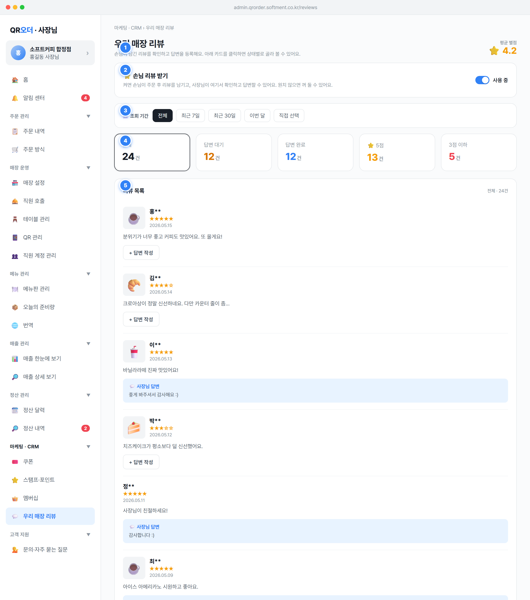

마케팅 · CRM › 우리 매장 리뷰와 제목 우리 매장 리뷰, 보조설명 "손님이 남긴 리뷰를 확인하고 답변을 등록해요. 아래 카드를 클릭하면 상태별로 골라 볼 수 있어요."를 노출한다.admin.qrorder.softment.co.kr/reviews, 사이드바 메뉴 라벨은 💬 우리 매장 리뷰(마케팅·CRM 그룹). 진입 시 renderReviews(main)가 실행된다.(기간내 리뷰 rating 합 / 기간내 리뷰 수)를 소수점 1자리로 표기. 기간 내 리뷰가 0건이면 ⭐ –로 표시(0.0 아님).all, 단 홈 "답변 안 한 리뷰" 카드로 진입하면 state.reviewFilter='wait'가 선행 설정된다(공통 §2.6 정렬·진입 규칙).Review{ id:int, cust:string(마스킹 표시명), date:string(YYYY-MM-DD), rating:int 1~5, body:string, reply:string, photo:string(이모지/이미지URL) }. 목록 소스는 REVIEWS[].Order)에서 손님 화면을 통해 1회 생성된다(주문 1건당 리뷰 최대 1개). review.orderId, review.storeId 연동 필드 권장.reviewWait = 현재 매장의 reply가 빈 리뷰 수. 답변 등록 시 즉시 감소한다.toggleReviewEnabled()가 state.reviewEnabled를 반전. 라벨은 ON일 때 사용 중, OFF일 때 사용 안 함으로 바뀐다.reviewEnabled: true). ON이면 헤더·기간바·지표·목록 전체를 렌더한다.reviews.enabled:boolean (state 키 reviewEnabled), 기본 true. 매장 단위 설정값으로 저장(매장 설정 엔터티).전체(all), 최근 7일(7d), 최근 30일(30d), 이번 달(thismonth), 직접 선택(custom). 클릭 시 setReviewRange(k) 실행, 선택 칩에 on 강조.custom 선택 시 시작/종료 date 인풋 2개가 나타나고(기본 시작 2026-01-01, 종료 2026-05-15), 변경 시 state.reviewStart/reviewEnd에 반영 후 즉시 재필터.reviewRange: 'all'|'7d'|'30d'|'thismonth'|'custom', reviewStart:string(YYYY-MM-DD), reviewEnd:string(YYYY-MM-DD).date 사전식 비교(YYYY-MM-DD 포맷 보장 시 안전). 실제 구현은 영업일 03:00 경계(SPEC §1.1)를 반영한 날짜로 산정.dated[]가 된다.state.reviewFilter를 all|wait|done|star5|low로 설정하고 목록을 재필터. 선택 카드에 on 강조 테두리(전체=먹색, 대기=주황, 완료=파랑, 5점=주황, 3점이하=빨강).wait 카드가 선택된 상태로 열린다(핀 1 behavior).dated[]. 상태 구분 키: 답변 여부 = !!review.reply, 별점 구간 = review.rating.waitCnt)가 홈 reviewWait와 동일 정의를 공유.reviewFilter 하나에 매핑되며 동시 다중 선택은 없다(단일 토글).{필터라벨} · {표시건수}건, 필터 적용 시 "· 전체 N건 중" 병기. 필터가 all이 아니면 우측에 필터 해제 버튼(클릭 시 reviewFilter='all').review.reply에 저장, 즉시 재렌더, 성공 토스트 "✅ 답변을 등록했어요" 표시(공통 §1 명시적 액션).cust, photo, rating(1~5), date, body, reply. 답변 저장 = REVIEWS.find(x=>x.id===id).reply = 입력값.reply:string — 검증: 공백만 입력 불가, 최대 길이 500자 권장(폼 검증, 공통 §폼). 빈 문자열은 "미답변" 상태로 간주.review.reported:boolean, reportReason 필드를 두고 신고 시 본사(소프트먼트) 검수 큐로 전달하는 API 성격.